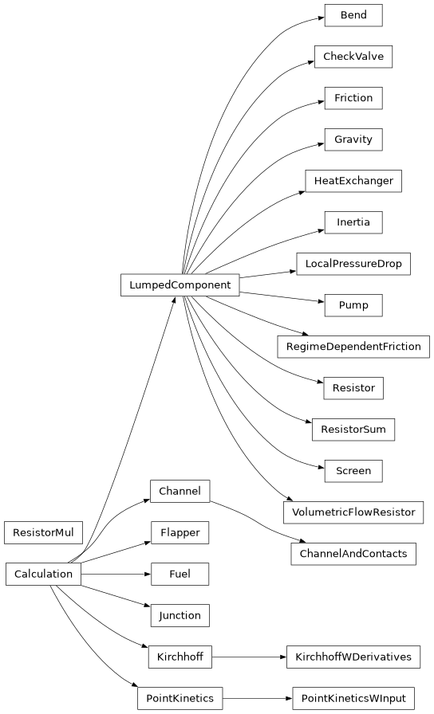

Calculations
Includes several predefined thermohydraulic calculations.
These calculations are derived from Calculation.
Currently, included here are mostly calculations regarding the incompressible
1D coolant flow scheme. Other notable members are Fuel,
the heat diffusion descriptor, and PointKinetics,
the point-reactor neutronics descriptor.
Summary of Available Calculations

|
A channel in a reactor core, this model utilizes the incompressible flow assumption. |
|
This class assumes two walls encompass a channel. |
|
A Flapper has 2 states, open or close. |
|
Resistor quadratic in flow using a given friction coefficient |
|
Represents a solid component in which heat is generated and/or transferred. |
|
A Calculation describing in a 0D manner the pressure difference incurred by gravity, i.e. \(\Delta p = \rho g \Delta h\). |
|
This heat exchanger doesn't care about input temperature, it always returns the same temperature. |
|
Flow inertia. |
|
A junction calculation should be used anywhere several hydraulic inputs and outputs meet. |
|
Dictates flow in a given circuit for an incompressible liquid |
|
A Kirchhoff Calculation containing \(\ddot{m}\) |
|
Local pressure drop due to expansion or contraction according to Idelchik chapter 4. |
|
The Point Kinetics model is the simplest Neutronics dynamical model. |
|
The same good-old PK, but with added power_input |
|
Hydraulic component constraining \(\Delta p\) or \(\dot{m}\). |
|
Friction resistor which depends on the Reynolds number, see |
|
A simple linear resistor to flow. |
|
Adding several LumpedComponent in series, into a single calculation. |
|
A calculation that is the same as an encapsulated resistor but multiplies its pressure loss by a known factor. |
|
Pressure drop due to a low relative curvature bend in a smooth circular/square pipe according to Idelchik chapter 6. |
|
A smooth one-way valve: a quadratic loss forward and a much stiffer quadratic loss backward. |
|
A resistor to flow due to a circular metal wire mesh |
|
An object that resists flow as: |
|
Simple bulk properties of a material |
|
A solve was stopped because a channel's bulk coolant reached saturation. |
Heat Diffusion
A calculation depicting heat diffusion in a solid (supposedly material or cladding).
Discretizing the Heat Equation
Calculate the temporal derivative of temperatures according to the heat equation, which is, in this case:
The medium is considered 2D in both the Cartesian and the Polar case.
Cartesian Discretization:
Integrating and writing the terms, while assuming y-symmetry. Cell \((i,j)\) reads \(i\) th cell from the top and \(j\) th cell from the left.
- Temporal derivative
- \[\int_{V_{ij}} \rho c_p\frac{\partial T}{\partial t} dV = \rho_{ij} c_{p,ij}\frac{\partial T_{ij}}{\partial t} V_{ij}\]
- Power Source
- \[\int_{V_{ij}} q'''dV = P_{ij}\]
- Diffusive Term
- \[\int_{V_{ij}} \nabla\cdot(k\nabla T)dV = \oint_{\partial V_{ij}}(k\nabla T)\cdot dA\]
Cells are boxes, so in the x-direction:
\[= \left[(k\nabla T)_{i,j+1/2} - (k\nabla T)_{i,j-1/2}\right]A_i\]The thermal resistance going from one cell center to the other is just
\[r_{ij, i(j+1)} = \frac{\Delta x_{ij}}{2k_{ij}} + \frac{\Delta x_{i(j+1)}}{2k_{i(j+1)}} + 1 / h_{ij, i(j+1)}\]Where \(h\) is contact conductance. Then, the flux is taken as:
\[(k\nabla T)_{i,j+1/2} = (T_{i,j+1} - T_{i,j}) / r_{ij, i(j+1)}\]At the boundaries, the wall temperatures are used in a similar fashion, such that the temperature gradient is taken as one-sided.
Polar Discretization:
For the polar case, azimuthal symmetry is assumed, and the temperature is a function of the radius \(r\) and height \(z\). Similar to the Cartesian case, here cell \((i,j)\) reads \(i\) th cell from the top and \(j\) th cell from the smallest radius (0 for a cylinder). The integration is the same (since the \(\nabla_\hat{r}\) and \(\nabla_\hat{z}\) components are just \(\partial_r\) and \(\partial_z\), respectively), but the volumes and cell areas are \(r\)-dependent. Specifically:
The thermal resistance is then computed in the same manner using the distances between cell centers \(\Delta r, \Delta z\).
- class Fuel(z_boundaries, x_boundaries, material, y_length, power_shape, heat_func=<function x_diffusion>, T_wall_func=<function wall_temperature>, x_contacts=None, z_contacts=None, meat_indices=None, name='Fuel')[source]
Bases:
CalculationRepresents a solid component in which heat is generated and/or transferred. An internal volumetric heat source may be supplied and heat is conducted in up to two dimensions.
Geometry is introduced through 2 explicit dimensions, termed \(x\) and \(z\) and an auxiliary dimension termed \(y\) in which symmetry is assumed. Providing
heat_funcmay allow one to support generally many continuous 2D structures. Explicitly supported geometries are:Rectangular (
x_diffusionorxz_diffusion).Cylindrical (
r_diffusionorrz_diffusion) - in this case the radial dimension is \(x\), and \(y\) represents an azimuthal symmetry.
See more in Discretizing the Heat Equation for the according Cartesian and Polar discretizations of the heat equation.
Boundary conditions are supplied through extraneous temperature and conductance pairs, which are termed
left,right,top, andbottom, and couple to the 2D mesh \(z \times x\) accordingly. Be aware that there is an inherent difference between (left,right) and (top,bottom). While this calculation provides its calculated wall temperatures at the (left,right) walls (so that other calculations may transfer heat from it), the (top,bottom) wall temperatures are calculated but not provided.Defaults:
Geometry is rectangular
Contactsare assumed infinitely conductive.Meat_indicesdescribes the entire plate as meat.heat_funcdescribes x-diffusion only.T_wall_funcassumes zero-inertia at wall.power_shapeis assumed uniform.
- Parameters:
z_boundaries (Meter) – Boundaries crossing the z-axis
x_boundaries (Meter) – Boundaries crossing the x-axis
material (Solid) – Bulk properties. Can be of shape: (z_cells, x_cells) matrix
y_length (Meter) – Length of the symmetric dimension.
power_shape (Array2D) – Shape of power distribution over the fuel meat. Should have the same shape as the fuel meat.
heat_func (Callable) – A function computing the temporal derivative of bulk temperatures.
T_wall_func (Callable) – A function computing wall temperatures.
x_contacts (WPerM2K) – Contact conductivity of x_axis contacts. This means its shape should be (z_cells, x_cells + 1), i.e. including outer boundaries.
z_contacts (WPerM2K) – Contact conductivity of z_axis contacts. This means its shape should be (z_cells + 1, x_cells), i.e. including outer boundaries.
meat_indices (Array2D) – Meat placements, specifically where power would be deposited (at meat_indices = 1).
name (str) – Name of the calculation.
- calculate(variables, *, power, T_left=None, T_right=None, T_top=None, T_bottom=None, h_left=None, h_right=None, h_top=None, h_bottom=None)[source]
Calculating temperatures inside fuel and at the edges. If wall temperatures are not given
- Parameters:
variables (Celsius) – Temperatures inside (and on edges) of Fuel element
power (Watt) – Generated power at meat.
T_left (Celsius) – Temperature just outside the left edge
T_right (Celsius) – Temperature just outside the right edge
T_top (Celsius) – Temperature just outside the top edge
T_bottom (Celsius) – Temperature just outside the bottom edge
h_left (WPerM2K) – Left wall conductance
h_right (WPerM2K) – Right wall conductance
h_top (WPerM2K) – Top wall conductance
h_bottom (WPerM2K) – Bottom wall conductance
- Returns:
Functional output – Temporal derivative (for inner temperatures) and error for walls
- Return type:
CPerS or C
- Raises:
ValueError – If a wall’s temperature is given without its conductance. A wall given neither takes a conductance of 1.0 and the temperature of its edge cells.
- indices(variable, asking=None)[source]
- Parameters:
variable (str)
- Return type:
int | slice | ndarray
- load(state)[source]
Given a state of the calculation, return the untagged corresponding array, which may be used to calculate the next step.
The default method implemented here assumes the state is completely described by the variables presented in self.variables.
- Parameters:
state (CalcState) – Tagged information regarding system state
- Returns:
y – Calculation ready array
- Return type:
Array1D
- save(vector, **_)[source]
- Parameters:
vector (Sequence[float])
- Return type:
dict[str, float | ndarray]
- property mass_vector: Sequence[bool]
- property variables: dict[str, int | slice | ndarray]
- class Solid(density, specific_heat, conductivity)[source]
Bases:
objectSimple bulk properties of a material
- Parameters:
density (KgPerM3)
specific_heat (JPerKgK)
conductivity (WPerMK)
- classmethod from_array(array)[source]
Create a Solid from an array of Solid scalars
- Parameters:
array (np.array) – An array of Solid objects, where each instance has scalar values
- Returns:
An instance with array-shaped fields.
- Return type:
Examples
>>> Solid.from_array(np.array([Solid(1, 2, 3), Solid(4, 5, 6)])) Solid(density=array([1, 4]), specific_heat=array([2, 5]), conductivity=array([3, 6]))
- conductivity: float | ndarray
- density: float | ndarray
- specific_heat: float | ndarray
- class Walls(left=None, right=None, top=None, bottom=None)[source]
Bases:
objectSimple 2D walls container
- Parameters:
left (float | ndarray)
right (float | ndarray)
top (float | ndarray)
bottom (float | ndarray)
- bottom: float | ndarray
- left: float | ndarray
- right: float | ndarray
- top: float | ndarray
- property x
The x (lateral) values of the walls
- property z
The z (axial) values of the walls.
- cylindrical_areas_volumes(r, z)[source]
Calculate areas and cell volumes for a cylindrical mesh
- Parameters:
r (Meter) – Boundaries crossing the r-axis.
z (Meter) – Boundaries crossing the z-axis.
- Return type:
Areas and volumes for rz diffusion
Examples
>>> r = np.array([0, 1, 4, 14]); z = np.array([0, 3, 5, 15]) >>> r_areas, z_areas, volumes = cylindrical_areas_volumes(r=r, z=z) >>> r_areas / (2 * np.pi) array([[ 0., 3., 12., 42.], [ 0., 2., 8., 28.], [ 0., 10., 40., 140.]]) >>> z_areas / np.pi array([[ 1., 15., 180.], [ 1., 15., 180.], [ 1., 15., 180.], [ 1., 15., 180.]]) >>> volumes / np.pi array([[ 3., 45., 540.], [ 2., 30., 360.], [ 10., 150., 1800.]])
- r_diffusion(T, T_walls, material, power, x, z, contacts, **_)[source]
1D heat diffusion (r) in a 2D cylindrical mesh (r, z). Assumes azimuthal symmetry.
Calculates the temporal derivative of temperatures according to the heat equation.
- Parameters:
T (Celsius) – Material temperature
T_walls (Walls) – Wall temperatures, inner and outer radii.
material (Solid) – a Solid object for thermal properties
power (Watt) – Power, a source term.
x (Meter) – Boundaries crossing the r-axis.
z (Meter) – Boundaries crossing the z-axis.
contacts (Sequence[WPerM2K]) – indices and transfer coefficients for Fuel-Clad contacts
- Returns:
dT/dt – for the heat equation in the material. r diffusion is assumed.
- Return type:
CPerS
- rz_diffusion(T, T_walls, material, power, x, z, contacts, **_)[source]
2D heat diffusion in a 2D cylindrical mesh (r, z). Assumes azimuthal symmetry.
Calculates the temporal derivative of temperatures according to the heat equation.
- Parameters:
T (Celsius) – Material temperature
T_walls (Walls) – Wall temperatures, inner and outer radii.
material (Solid) – a Solid object for thermal properties
power (Watt) – Power, a source term.
x (Meter) – Boundaries crossing the r-axis.
z (Meter) – Boundaries crossing the z-axis.
contacts (Sequence[WPerM2K]) – indices and transfer coefficients for Fuel-Clad contacts
- Returns:
dT/dt – for the heat equation in the material. rz diffusion is assumed.
- Return type:
CPerS
- x_diffusion(T, T_walls, material, power, x, z, contacts, y)[source]
1D heat diffusion (x) in a 2D mesh (x, z)
Calculates the temporal derivative of temperatures according to the heat equation.
- Parameters:
T (Celsius) – Material temperature
T_walls (Walls) – Wall temperatures, left and right (in the case of polar coordinates, inner and outer radii)
material (Solid) – a Solid object for thermal properties
power (Watt) – Power, a source term.
x (Meter) – Boundaries crossing the x-axis.
z (Meter) – Boundaries crossing the z-axis.
y (Meter) – In the Cartesian case, the length of the non-described (meaning symmetric) dimension.
contacts (Sequence[WPerM2K]) – indices and transfer coefficients for Fuel-Clad contacts
- Returns:
dT/dt – for the heat equation in the material. Only x-diffusion is assumed.
- Return type:
CPerS
- xz_diffusion(T, T_walls, material, power, x, z, contacts, y)[source]
2D heat diffusion in a 2D mesh (x, z)
Calculates the temporal derivative of temperatures according to the heat equation.
- Parameters:
T (Celsius) – Material temperature
T_walls (Walls) – Wall temperatures, left and right (in the case of polar coordinates, inner and outer radii)
material (Solid) – a Solid object for thermal properties
power (Watt) – Power, a source term.
x (Meter) – Boundaries crossing the x-axis.
z (Meter) – Boundaries crossing the z-axis.
y (Meter) – In the Cartesian case, the length of the non-described (meaning symmetric) dimension.
contacts (Sequence[WPerM2K]) – indices and transfer coefficients for Fuel-Clad contacts
- Returns:
dT/dt – for the heat equation in the material. xz-diffusion is assumed.
- Return type:
CPerS
See also
Point Kinetics
A calculation for the point kinetics neutronics model
- class PointKinetics(generation_time, delayed_neutron_fractions, delayed_groups_decay_rates, temp_worth=None, ref_temp=None, controls=None, name='PK')[source]
Bases:
CalculationThe Point Kinetics model is the simplest Neutronics dynamical model. It assumes spatial and spectral flux shapes are either unimportant or fixed, and deals with the flux by a single number which may be thought of as the population size or power. The delayed neutron yield processes are paramount to the dynamical description, thus they are characterized as well, bundled into k characteristic groups. The equations are:
\[\begin{split}\dot{P} &= \frac{\rho - \beta}{\Lambda} P + \sum_k C_k\lambda_k + \frac{S}{\Lambda} \\ \dot{C}_k &= - C_k\lambda_k + \frac{\beta_k}{ \Lambda} P\end{split}\]Where:
\(P\): power
\(\rho\): reactivity
\(\beta\): total delayed neutron fraction (1$)
\(\Lambda\): generation time
\(C_k\): k-group’s contribution to power
\(\lambda_k\) : k-group’s decay rate.
\(S\): Power Source
In this particular calculation, the reactivity may be influenced by a linear thermal feedback \(\rho = \rho_0 + \sum_i \vec{\alpha}_i \cdot (\vec{T}-\vec{T}_0)_i\) by corresponding coolant and fuel elements, where the temperature coefficients \(\alpha_i\) are negative by convention.
- Parameters:
generation_time (Second) – mean time between neutron generations.
delayed_neutron_fractions (Array1D) – the fractional yield of neutrons in defined delay groups. 1$ worth is the total.
delayed_groups_decay_rates (PerS) – each group’s decay rate.
temp_worth (dict[Calculation, PerC] or None) – a dictionary whose keys are fuel or channel elements, and values are their temperature coefficients of reactivity (scalar or per cell), negative for negative feedback.
ref_temp (dict[Calculation, Celsius] or None) – At such temperature/s, temperature feedback is 0.
controls (ReactivityController) – Induces reactivity due to a state-machine model of the reactor controls, including any postulated accidents. By default, does nothing.
name (str)
- calculate(variables, *, T=None, source=None, t, **kwargs)[source]
Calculate \(\frac{d}{dt}(P, \vec{C}_k)\)
- Parameters:
variables (Sequence[float]) – \((P, \vec{C}_k)\)
source (dict[Calculation, Watt] or None) – External Power Sources
T (dict[Calculation, Celsius] or None) – Temperatures which affect reactivity through ‘temp_worth’
t (Second or None) – Time, used to call input_reactivity
- Returns:
dPdt – the change in power and the delayed power fractions
- Return type:
Array1D
- change_state(variables, *, t, **kwargs)[source]
- Parameters:
variables (Sequence[float])
t (float | ndarray)
- indices(variable, asking=None)[source]
pk_power is the kinetics power row: the power row unless a subtype separates the two.
- Parameters:
variable (str)
asking (Calculation | None)
- Return type:
int | slice | ndarray | dict[str, int | slice | ndarray]
- reactivity(T, input_reactivity)[source]
Calculate the reactivity, given temperature feedback
- Parameters:
T (dict[Calculation, Array1D]) – Mapping of Calculation to temperatures (say in channels, fuels)
input_reactivity (float)
- Returns:
rho – Calculated reactivity
- Return type:
float
- save(vector, *, T=None, source=None, t, **kwargs)[source]
Given input for “calculate” (which is a legal state of the system), tag the information, i.e. create a “State” and return it.
- Parameters:
vector (Sequence[float])
source (dict[Calculation, Watt]) – External Power Sources
T (dict[Calculation, Celsius]) – Temperatures which affect reactivity through ‘temp_worth’
t (Second or None) – Time, used to call input_reactivity
- Returns:
state – Tagged information regarding system state
- Return type:
CalcState
- should_continue(variables, *, t, **kwargs)[source]
- Parameters:
variables (Sequence[float])
t (float | ndarray)
- Return type:
bool
- property mass_vector: Sequence[bool]
- property variables: dict[str, int | slice | ndarray]
- class PointKineticsWInput(generation_time, delayed_neutron_fractions, delayed_groups_decay_rates, temp_worth=None, ref_temp=None, controls=None, name='PK')[source]
Bases:
PointKineticsThe same good-old PK, but with added power_input
An additional distinction is made between power (=total power) and pk_power. Such a distinction is important when regarding additional sources of power, stemming from the decay of fission products, activated structure materials, gamma absorption and more. These sources should be passed to this model through
power_input.See also
decay_heat- Parameters:
generation_time (Second) – mean time between neutron generations.
delayed_neutron_fractions (Array1D) – the fractional yield of neutrons in defined delay groups. 1$ worth is the total.
delayed_groups_decay_rates (PerS) – each group’s decay rate.
temp_worth (dict[Calculation, PerC] or None) – a dictionary whose keys are fuel or channel elements, and values are their temperature coefficients of reactivity (scalar or per cell), negative for negative feedback.
ref_temp (dict[Calculation, Celsius] or None) – At such temperature/s, temperature feedback is 0.
controls (ReactivityController) – Induces reactivity due to a state-machine model of the reactor controls, including any postulated accidents. By default, does nothing.
name (str)
- calculate(variables, *, T=None, source=None, t, power_input=None, **kwargs)[source]
- Parameters:
variables (Sequence[float])
T (dict[Calculation, float | ndarray])
source (float | ndarray | None)
t (float | ndarray)
power_input (float | ndarray | None)
- Return type:
ndarray
- property mass_vector: Sequence[bool]
- property variables: dict[str, int | slice | ndarray]
- class ReactivityController(input_reactivity=None, state_machine=<function just.<locals>._val>, initial_state=OneWayToSCRAM.NORMAL, initial_time=0.0, abort_states=None)[source]
Bases:
objectInput to
PointKineticswhich depicts the reactivity worth inserted due to the reactor control system or postulated events. The control system is modelled as aStateMachine. This system can include the Reactor Protection System (RPS), Reactor Control and Monitoring System (RCMS) and such.The state machine is completely user defined such through an ‘Enum’ class. Then, two functionalities are requited: 1. The reactivity worth response of the controller \(w_c(s, t_s, t)\) where \(s\) the current state, \(t_s\) the time in which this state was invoked, and \(t\) the current time. 2. The state machine transfer function \(p: s \rightarrow s'\) where p receives \(p(s, t, P, \dot{P}, ...)\) provided by
PointKineticsduring simulation.After simulation, the log attribute of this class contains the history of states, which can be used for analysis and plotting.
- Parameters:
input_reactivity (InputReactivity or None) – The reactivity worth response of the controller \(w_c(s, t_s, t)\) where \(s\) the current state, \(t_s\) the time in which this state was invoked, and \(t\) the current time. If None, then no reactivity is inserted.
state_machine (StateMachine) – The state machine transfer function \(p: s \rightarrow s'\) where p receives \(p(s, t, P, \dot{P}, ...)\) provided by
PointKineticsduring simulation. If None, then the state machine is static and does not change state.initial_state (Enum) – Initial state
initial_time (Second) – Initial time
abort_states (set[Enum] or None) – States for which the simulation should stop, through the should_continue function.
- class StateMachine(*args, **kwargs)[source]
Bases:
ProtocolReactor control state machine. Assued Markovian
- SCRAM_at_power(power_limit='__no__default__', power='__no__default__', **kwargs)[source]
- Parameters:
power_limit (float | ndarray)
power (float | ndarray)
- temperature_reactivity(T, T0, weights)[source]
Calculate the reactivity, given temperature feedback
\[\rho = \sum_i \vec{\alpha}_i \cdot (\vec{T}-\vec{T}_0)_i\]where the temperature coefficients \(\alpha_i\) are negative by convention, so heating above the reference gives negative feedback.
- Parameters:
T (dict[Calculation, Array]) – Mapping of Channel calculation to temperatures in channel
T0 (dict[Calculation, Array]) – Reference Temperatures
weights (dict[Calculation, Array]) – Temperature coefficients of reactivity, scalar or per cell
- Returns:
rho – Calculated reactivity
- Return type:
float
Channel
Defines both coolant properties and data, and the temporal coolant temperature derivative calculation.
- exception SaturationReachedError(channel, cells, T_bulk, Tsat, *args)[source]
Bases:
RuntimeErrorA solve was stopped because a channel’s bulk coolant reached saturation.
The channel model (single-phase forced convection plus subcooled boiling) is valid up to bulk saturation. At net boiling the flow becomes two-phase, which is not modelled, and the wall
h = q/ΔTterm develops a finite-time pole that otherwise surfaces as anIDA_CONV_FAIL. When raised during a transient the solver attaches the valid pre-crossing trajectory astandy.- Parameters:
channel (str) – Name of the channel whose bulk crossed saturation.
cells (Sequence[int]) – Indices of the cells at or past saturation.
T_bulk (Sequence[float]) – Bulk and saturation temperatures (°C) at those cells.
Tsat (Sequence[float]) – Bulk and saturation temperatures (°C) at those cells.
- class Channel(z_boundaries, fluid, pipe, pressure_func=<function pressure_diff>, name='Channel')[source]
Bases:
CalculationA channel in a reactor core, this model utilizes the incompressible flow assumption. The Channel is considered 1D so that there is no attention to transverse flow.
- Parameters:
z_boundaries (Meter) – boundaries (no. cells + 1). Must be strictly monotonous.
fluid (LiquidFuncs) – Coolant properties, see
light_waterorheavy_water.pipe (EffectivePipe) – Channel geometry
pressure_func (Callable) – A function determining the pressure gradient in the channel.
name (str)
- calculate(variables, *, T_left=None, T_right=None, h_left=0.0, h_right=0.0, Tin, Tin_minus=None, mdot, mdot2=None, **kwargs)[source]
Calculate rate of temperature change in each cell by means of
First Order Upwindand pressure difference error.- Parameters:
variables (Sequence[float]) – Input variables, see
Channel.variablesT_left (Celsius) – Left and right boundary (wall) temperatures
T_right (Celsius) – Left and right boundary (wall) temperatures
h_left (WPerM2K) – Left and right heat transfer coefficients
h_right (WPerM2K) – Left and right heat transfer coefficients
Tin (Celsius) – Inlet boundary temperature
Tin_minus (Celsius) – Outlet boundary temperature
mdot (KgPerS) – Mass flow rate
mdot2 (KgPerS2) – \(\ddot{m}\), time derivative of
mdot
- Returns:
F(y, t) – Which comprises the rate of temperature change and a pressure difference constraint.
- Return type:
Array1D
- indices(variable, asking=None)[source]
- Parameters:
variable (str)
- Return type:
int | slice | ndarray
- save(vector, *, T_left=None, T_right=None, Tin, Tin_minus=None, mdot, p_abs=None, mdot2=None, **kwargs)[source]
Given input for “calculate” (which is a legal state of the system), tag the information, i.e. create a “State” and return it.
- Parameters:
vector (Sequence[float]) – Input variables, see
Channel.variablesT_left (Celsius) – Left and right boundary (wall) temperatures
T_right (Celsius) – Left and right boundary (wall) temperatures
Tin (Celsius) – Inlet boundary temperature
Tin_minus (Celsius) – Outlet boundary temperature
mdot (KgPerS) – Mass flow rate
p_abs (Pascal or None) – Pressure at the channel inlet. If given, the state will include the absolute pressure at each cell
mdot2 (KgPerS2) – \(\ddot{m}\), time derivative of
mdot
- Returns:
state – The physical state of the channel, which includes additionally
absolute_pressureand theRenumber in each cell.- Return type:
CalcState
- property mass_vector: Sequence[bool]
- property variables: dict[str, int | slice | ndarray]
Mapping
T_cool,pressureto vector places
- class ChannelAndContacts(z_boundaries, fluid, pipe, h_wall_func=<function wall_heat_transfer_coeff>, pressure_func=<function pressure_diff>, name='CC', stop_at_saturation=False)[source]
Bases:
ChannelThis class assumes two walls encompass a channel. It calculates the heat transfer coefficient to each wall in addition to the Channel properties.
- Parameters:
z_boundaries (Meter) – boundaries (no. cells + 1). Must be strictly monotonous.
fluid (LiquidFuncs) – Coolant properties
pipe (EffectivePipe) – Channel geometry
h_wall_func (Callable) – A function determining the heat transfer coefficient
pressure_func (Callable) – A function determining the pressure gradient in the channel.
stop_at_saturation (bool) – When
True, the channel exposes a per-cell bulk-saturation event margin, so a transient stops at the crossing, which is the model’s validity boundary, and raisesSaturationReachedError. WhenFalse(default) the channel adds no event. Seeevent_margin.name (str)
See also
- calculate(variables, *, T_left=None, T_right=None, Tin, Tin_minus=None, mdot, p_abs, mdot2=None)[source]
- Parameters:
variables (Sequence[float]) – Input variables, see
ChannelAndContacts.variablesT_left (Celsius) – Left and right boundary (wall) temperatures
T_right (Celsius) – Left and right boundary (wall) temperatures
Tin (Celsius) – Inlet boundary temperature
Tin_minus (Celsius) – Outlet boundary temperature
mdot (KgPerS) – Mass flow rate
p_abs (Pascal) – The absolute pressure at the inlet.
mdot2 (KgPerS2) – \(\ddot{m}\), time derivative of
mdot
- Returns:
F(y, t) – Which consists of the rate of temperature change, and pressure difference and wall heat transfer coefficients constraint.
- Return type:
Array1D
- change_state(variables, **kwargs)[source]
- Parameters:
variables (Sequence[float])
- Return type:
None
- dist_from_edge(mdot)[source]
Computes the center distances from the channel entrance depending on flow direction.
- Parameters:
mdot (KgPerS) – Mass flow rate. Sign determines flow direction.
- Returns:
out – Distance from the inlet edge to each cell centre, measured along the channel.
- Return type:
Meter
- event_margin(variables, *, T_left=None, T_right=None, mdot, p_abs, mdot2=None, **_)[source]
Per-cell bulk-saturation margin
Tsat(p) - T_coolwhenstop_at_saturationis set, else an empty array (no event).Bulk temperature is one value per cell, shared by both walls, so the margin has one entry per cell. It crosses zero where the single-phase (with subcooled boiling) model’s validity ends.
- Parameters:
variables (Sequence[float])
T_left (float | ndarray)
T_right (float | ndarray)
mdot (float | ndarray)
p_abs (float | ndarray)
mdot2 (float | ndarray)
- Return type:
ndarray
- h_wall(T_cool, T_wall, mdot, pressure, **_)[source]
- Parameters:
T_cool (float | ndarray)
T_wall (float | ndarray)
mdot (float | ndarray)
pressure (float | ndarray)
- Return type:
float | ndarray | None
- indices(variable, asking=None)[source]
- Parameters:
variable (str)
- Return type:
int | slice | ndarray
- save(vector, *, T_left=None, T_right=None, Tin, Tin_minus=None, mdot, p_abs=None, **kwargs)[source]
Given input for “calculate” (which is a legal state of the system), tag the information, i.e. create a “State” and return it.
- Parameters:
vector (Sequence[float]) – Input variables, see
ChannelAndContacts.variablesT_left (Celsius) – Left and right boundary (wall) temperatures
T_right (Celsius) – Left and right boundary (wall) temperatures
Tin (Celsius) – Inlet boundary temperature
Tin_minus (Celsius) – Outlet boundary temperature
mdot (KgPerS) – Mass flow rate
p_abs (Pascal or None) – Pressure at the channel inlet. If given, the state will include the absolute pressure at each cell
- Returns:
state – The physical state of the channel, which includes additionally things like
absolute_pressure,Re,ONB, left,ONB, rightsafety factor (for each wall, seeBR_ONB) number in each cell.- Return type:
CalcState
- property mass_vector: Sequence[bool]
- property variables: dict[str, int | slice | ndarray]
Mapping
T_cool,h_left,h_right,pressureto vector places
- class ChannelHeatFlux(z_boundaries, fluid, pipe, pressure_func=<function pressure_diff>, name='Channel')[source]
Bases:
ChannelA channel in a reactor core. This model utilizes the incompressible flow assumption. The Channel is considered 1D so that there is no attention to transverse flow. This class differs from the
Channelclass by having a different way to couple with an adjunct heat producer. TheChannelclass gives the heat producer a heat transfer coefficient and receives its temperature, but this object is coupled by getting the heat flux itself from that neighbor.This object is simpler, and thus less useful for actual systems, but more useful for toy problems.
- Parameters:
z_boundaries (Meter) – boundaries (no. cells + 1). Must be strictly monotonous.
fluid (LiquidFuncs) – Coolant properties, see
light_waterorheavy_water.pipe (EffectivePipe) – Channel geometry
pressure_func (Callable) – A function determining the pressure gradient in the channel.
name (str)
- classmethod from_channel(channel)[source]
Make a heat flux based channel from a regular one.
- Parameters:
channel (Channel)
- Return type:
- calculate(variables, *, Tin=None, Tin_minus=None, T_left=None, T_right=None, mdot, mdot2=None, q_left=0.0, q_right=0.0)[source]
- Parameters:
variables (Sequence[float])
Tin (float | ndarray)
Tin_minus (float | ndarray)
T_left (float | ndarray)
T_right (float | ndarray)
mdot (float | ndarray)
mdot2 (float | ndarray)
q_left (float | ndarray)
q_right (float | ndarray)
- Return type:
ndarray
- class ChannelVar(*values)[source]
Bases:
StrEnumEnum for variable names saved in Channel calculations.
This class is useful for discoverability, and to increase coherency across the setup and analysis of channels, which are often analyzed thoroughly.
- classmethod get(key, direction)[source]
Get the variable name in a case where direction may be involved.
- absolute_pressure = 'absolute_pressure'
- gr_left = 'Gr, left'
- gr_right = 'Gr, right'
- h_left = 'h_left'
- h_right = 'h_right'
- heatflux_left = 'q, left'
- heatflux_right = 'q, right'
- mass_flow = 'mass_flow'
- pe = 'Pe'
- power = 'power'
- pressure_drop = 'pressure'
- re = 'Re'
- static_pressure = 'static_pressure'
- tbulk = 'T_cool'
- tin = 'T_in'
- tout = 'T_out'
- twall_left = 'T_wall, left'
- twall_right = 'T_wall, right'
- velocity = 'velocity'
- class Direction(*values)[source]
Bases:
StrEnumDirections that are supported by the code.
We use this enum rather than literal strings because we want other places in the code to refer to these values in a way where things won’t break if we rename directions.
It is also somewhat more discoverable.
- inner = 'left'
- left = 'left'
- outer = 'right'
- right = 'right'
- coolant_first_order_upwind_dTdt(T, Tin, mdot, q_left, q_right, fluid, pipe, dz)[source]
Calculates the first order upwind differencing temperature convection equation’s temporal derivative. Essentially, this is the equation:
\[mc_p\dot{T_i} = \frac{1}{2}\dot{m}(c_{p,i}+c_{p,i-1})(T_{i-1}-T_{i}) + h\Pi (T_{wall,i} - T_i)\]- Parameters:
T (Celsius) – Bulk temperature (assumed 1D)
Tin (Celsius) – Inlet bulk temperature (assumed float)
q_left (WPerM2K) – Wall heat flux
q_right (WPerM2K) – Wall heat flux
mdot (KgPerS) – Mass flow of coolant, assumed constant along channel
fluid (LiquidFuncs) – Temperature and pressure dependent coolant properties
pipe (EffectivePipe) – Geometrical properties of the channel
dz (Meter) – Cell sizes, which may vary.
- Returns:
dT/dt – the temporal derivative of the bulk temperature
- Return type:
CPerS
LumpedComponent
The LumpedComponent is used as
a base class for methods and properties which many other Calculations use.
The overarching concept is that of a Lumped object in an idealized Kirchoff model
for flow, with an analogy to electronic circuits.
Most Primary Circuit Calculations just deal with changes in pressure and outlet
temperature, and these often share much of their implementation.
Some calculations may benefit from methods or properties of the LumpedComponent,
and if they are not just LumpedComponents, they should use composition rather
than inheritance, as done in Flapper.
If you want to represent a 0-dimensional, no inner-working Calculation, which
only serves to have a pressure drop or a temperature change, you may find this
namespace to be useful.
- class LumpedComponent(*args, **kwargs)[source]
Bases:
Calculation0-dimensional Kirchhoff-oriented flow components
An ideal simple component would only need two variables:
Incoming temperature (Tin)
Incoming mass current (mdot)
These calculations compute only the outlet temperature and the pressure difference on them. The equations are assumed to be algebraic.
- T_out(*, Tin, **_)[source]
Outlet temperature calculation.
- Parameters:
Tin (Celsius) – Inlet Temperature
- Return type:
float | ndarray
- calculate(variables, *, mdot, Tin, Tin_minus=None, **kwargs)[source]
Compute the algebraic residual values for this Calculation.
- Parameters:
variables (Sequence[float]) – Input variables, specifically [Tin, dp]
Tin (Celsius) – Inlet Temperature.
Tin_minus (Celsius or None) – Inlet Temperature in case the flow is reversed.
mdot (KgPerS) – Mass flow rate.
kwargs (dict) – Other input. It takes precedence over the following
dict(dp=dp, Tin=Tin, mdot=mdot)when merged, which is then input forself.T_outandself.dp_out.
- Returns:
errors – The error in
variables- Return type:
Array1D
- dp_out(*, mdot, Tin, **_)[source]
Pressure drop calculation.
- Parameters:
mdot (KgPerS) – Mass flow rate
Tin (Celsius) – Inlet temperature.
- Return type:
Pascal
- indices(variable, asking=None)[source]
For a given variable name, return the appropriate positions in the vector
- Parameters:
variable (Name) – Name of requested variable
asking (Calculation or None) – What calculation is asking for the indices? For example, this is important in
Kirchhoff.
- Returns:
indices – The place in which the calculation uses the variable, or a dictionary with variable names related to this name and their places.
- Return type:
Place or dict[Calculation, Place]
- property mass_vector: tuple[bool, bool]
A mass vector, which is just two False values.
- property variables: dict[str, int | slice | ndarray]
All variables owned by calculation
Pumps
- class Pump(pressure=None, mdot0=None, name='Pump')[source]
Bases:
LumpedComponentHydraulic component constraining \(\Delta p\) or \(\dot{m}\). It does not affect temperature values, merely propagates it.
If the chosen constraint is mass flow rate (\(\dot{m}=\dot{m}_0\)), then the pressure difference cannot be constrained, and vice versa. One can provide externally a time-dependent value of pressure difference or mass flow rate.
- Parameters:
pressure (Pascal or None) – Optional Static desired \(\Delta p\)
mdot0 (KgPerS or None) – Optional Static desired \(\dot{m}\)
name (str or None) – Optional name, see Calculation
- Raises:
ValueError – If both
pressureandmdot0are not None.
Resistors
Calculations that only drop the pressure when fluid flows through them.
Their electrical analogs are resistors in an electric circuit, even though most of the resistors here do not follow an Ohm’s law (i.e. they are not linear).
- class Bend(fluid, hydraulic_diameter, area, bend_radius, bend_angle, friction_func=CPUDispatcher(<function turbulent_friction>), name='Bend')[source]
Bases:
LumpedComponentPressure drop due to a low relative curvature bend in a smooth circular/square pipe according to Idelchik chapter 6.
The appropriate diagram is 6.1, on page 424.
- Parameters:
fluid (LiquidFuncs) – Coolant properties
hydraulic_diameter (Meter) – Hydraulic diameter of the pipe.
area (Meter2) – Cross-sectional area of the pipe.
bend_radius (Meter) – The pipe’s axis radius of curvature, measured from the bend center to the center of the pipe.
bend_angle (Radians) – The pipe’s bend angle.
friction_func (Callable[[float], float]) – Re-dependent Darcy friction function. Default is
turbulent_friction.name (str)
- class CheckValve(k_forward, reverse_ratio=1000.0, eps=0.1, name='CheckValve')[source]
Bases:
LumpedComponentA smooth one-way valve: a quadratic loss forward and a much stiffer quadratic loss backward.
\[\Delta p = -k\dot{m}|\dot{m}|\left(1 + r\,w(-\dot{m}, \epsilon)\right)\]where \(w\) is
smooth_pos_weight, a weight that rises smoothly from 0 to 1 over a band of half-width \(\epsilon\) around zero flow. Beyond the band, forward flow sees \(k\) and reverse flow sees \(k(1 + r)\). The pressure drop is zero at zero flow and the law is continuously differentiable through it.This is a modelling device for a valve that blocks reverse flow, not a valve model: there is no cracking pressure and no disc dynamics, and reverse flow is resisted, never cut off.
- Parameters:
k_forward (float) – Forward loss coefficient \(k\) [Pa s^2/kg^2], so that \(\Delta p = -k\dot{m}^2\) for forward flow beyond the band.
reverse_ratio (float) – \(r\), the extra stiffness of the reverse branch; reverse flow beyond the band sees \(k(1 + r)\).
eps (KgPerS) – Half-width of the smooth band around zero flow over which the reverse branch is switched on [kg/s].
name (str) – The name to give this calculation.
- class DPCalculation(*args, **kwargs)[source]
Bases:
Calculation,ProtocolA calculation that has a dp_out method
- dp_out(*, mdot, Tin, **_)
Pressure drop calculation.
- Parameters:
mdot (KgPerS) – Mass flow rate
Tin (Celsius) – Inlet temperature.
- Return type:
Pascal
- class Friction(f, fluid, length, hydraulic_diameter, area, name='Friction')[source]
Bases:
LumpedComponentResistor quadratic in flow using a given friction coefficient
- Parameters:
f (float) – Darcy-Weisbach friction factor
fluid (LiquidFuncs) – Coolant properties
length (Meter)
hydraulic_diameter (Meter)
area (Meter2)
name (str)
See also
- class Gravity(fluid, disposition, gravity=9.80665, name='Gravity')[source]
Bases:
LumpedComponentA Calculation describing in a 0D manner the pressure difference incurred by gravity, i.e. \(\Delta p = \rho g \Delta h\)
See also
- Parameters:
fluid (LiquidFuncs) – Coolant Functional properties
disposition (Meter) – \(\Delta h\), height difference upon which the pressure difference is incurred
gravity (MPerS2) – Gravitational acceleration constant
name (str)
- class LocalPressureDrop(fluid, A1, A2, name='LocalPD')[source]
Bases:
LumpedComponentLocal pressure drop due to expansion or contraction according to Idelchik chapter 4.
The appropriate diagrams are 4.2 and 4.10, on pages 246 and 256.
- Parameters:
fluid (LiquidFuncs)
A1 (float | ndarray)
A2 (float | ndarray)
name (str)
- class MultipliableCalculation(*args, **kwargs)[source]
Bases:
Calculation,ProtocolA calculation that can be multiplied by a float to create a new calculation with meaning.
This is used so that we can write 2*resistor to create a resistor that always has twice the pressure drop, for example.
- class RegimeDependentFriction(pipe, fluid, re_bounds, k_R, name='Friction', laminar=CPUDispatcher(<function laminar_friction>), turbulent=CPUDispatcher(<function turbulent_friction>))[source]
Bases:
LumpedComponentFriction resistor which depends on the Reynolds number, see
regime_dependent_friction- Parameters:
pipe (EffectivePipe)
fluid (LiquidFuncs)
re_bounds (tuple[float, float])
k_R (float)
name (str)
laminar (Callable[[float], float])
turbulent (Callable[[float], float])
- class Resistor(resistance, name='R')[source]
Bases:
LumpedComponentA simple linear resistor to flow. It ensures \(\Delta p = \dot{m}R\) (Ohm’s law)
- Parameters:
resistance (float | ndarray)
name (str)
- class ResistorMul(factor, resistor)[source]
Bases:
objectA calculation that is the same as an encapsulated resistor but multiplies its pressure loss by a known factor.
This class uses __getattr__ magic to act like a calculation so long as its resistor is a calculation.
- Parameters:
factor (float)
resistor (DPCalculation)
- class ResistorSum(*resistors, name='R')[source]
Bases:
LumpedComponentAdding several LumpedComponent in series, into a single calculation. These calculations must leave the temperature unchanged, dealing only with pressure drop.
- Parameters:
resistors (DPCalculation)
name (str)
- change_state(variables, *, mdot, Tin, Tin_minus=None, **kwargs)[source]
- Parameters:
variables (Sequence[float])
mdot (float | ndarray)
Tin (float | ndarray)
Tin_minus (float | ndarray | None)
- class Screen(clear_area, total_area, wire_diameter, fluid, name='Screen')[source]
Bases:
LumpedComponentA resistor to flow due to a circular metal wire mesh
A screen-type resistor based on the circular metal wire screen in[1].
- Parameters:
clear_area (Meter2) – The total unobstructed mesh area
total_area (Meter2) – The total area
wire_diameter (Meter) – Diameter of the circular wire
fluid (LiquidFuncs) – Coolant property functions
name (str) – The name to give this calculation.
References
- class VolumetricFlowResistor(k, name, density_func, klow=0)[source]
Bases:
LumpedComponentAn object that resists flow as:
\[\Delta p = kQ^2 +k_{low}Q = k\frac{\dot{m}^2}{\rho^2} + k_{low}\frac{\dot{m}}{\rho}\]- Parameters:
k (KgPerM7) – Resistor constant
name (str) – The name to give this calculation.
density_func (Callable[[Celsius], KgPerM3]) – Temperature-dependent coolant density
klow (KgPerM4S) – The resistor constant at negligible flow.
Heat Exchangers
- class HeatExchanger(outlet, name='HX')[source]
Bases:
LumpedComponentThis heat exchanger doesn’t care about input temperature, it always returns the same temperature. Additionally, it exerts no pressure difference.
- Parameters:
outlet (float | ndarray)
name (str)
Inertia
Consider the case of incompressible (thus barotropic), inviscid, flow. Along a streamline or any two points in irrotational flow, the Bernoulli integral equation is for some body force potential \(\psi\):
One may write the first term as follows:
Which is the inertia term, and may be written with equivalent inertia 1/length \((l/A)_{Total}\).
References
- class Inertia(inertia, name='Inertia')[source]
Bases:
LumpedComponentFlow inertia. Mathematically speaking, it is equivalent to an electrical inductor.
The equation represented here is really:
\[\Delta p = L \frac{d\dot{m}}{dt}\]Where \(L\) is the inertia. For more information, please see[2]
- Parameters:
inertia (PerM | Callable[[...], PerM]) – Moment of inertia. In terms of “geometrical” inertia, this may be viewed as \((l/A)_T\).
name (str)
Notes
\(A\) is the equivalent cross-sectional flow area of the system.
\(l\) is the equivalent flow length of the system.
- bilinear(L0, mdot0)[source]
Creates a bi-linear inertia function, to be used in
Inertia.The inertance is a positive geometric quantity \((l/A)_T\), so it depends on the flow magnitude and stays positive for either flow direction:
\[\begin{split}L= \begin{cases} L_0 (|\dot{m}|/\dot{m}_0) & \text{if $|\dot{m}| < \dot{m}_0$} \\ L_0 & \text{otherwise} \end{cases}\end{split}\]A small positive floor keeps \(L>0\) through \(\dot{m}=0\), avoiding the singular \(\ddot{m}=\Delta p/L\) at the flow-reversal instant.
- Parameters:
L0 (PerM) – Inertia constant
mdot0 (KgPerS) – The bi-linear knee current, under which the inertia is linearly decreasing.
- Returns:
bi – The inertia function \(L(\dot{m})\)
- Return type:
Callable[[KgPerS, …], PerM]
- bilinear(L0, mdot0)[source]
Creates a bi-linear inertia function, to be used in
Inertia.The inertance is a positive geometric quantity \((l/A)_T\), so it depends on the flow magnitude and stays positive for either flow direction:
\[\begin{split}L= \begin{cases} L_0 (|\dot{m}|/\dot{m}_0) & \text{if $|\dot{m}| < \dot{m}_0$} \\ L_0 & \text{otherwise} \end{cases}\end{split}\]A small positive floor keeps \(L>0\) through \(\dot{m}=0\), avoiding the singular \(\ddot{m}=\Delta p/L\) at the flow-reversal instant.
- Parameters:
L0 (PerM) – Inertia constant
mdot0 (KgPerS) – The bi-linear knee current, under which the inertia is linearly decreasing.
- Returns:
bi – The inertia function \(L(\dot{m})\)
- Return type:
Callable[[KgPerS, …], PerM]
Flapper
Flappers are control-flow elements in hydraulic systems.
A simple implementation is presented simply as Flapper.
- class Flapper(open_at_current, f, fluid, area, open_rate, stop_on_open=False, relaxation=<function legacy_relaxation>, name='Flapper')[source]
Bases:
CalculationA Flapper has 2 states, open or close. When closed, there is no flow. When open, it is a regular frictional resistor. The condition to change state is when \(\dot{m} \leq \dot{m}_0\) for some user provided \(\dot{m}_0\)
- Parameters:
open_at_current (KgPerS) – At this \(\dot{m}_0\) and lower, the flapper opens and remains open
f (float) – Once open, the Flapper behaves as a resistor (current-squared), whose coefficient is
f. When closed, the returned error on the pressure equation is simply \(\dot{m}\), which should be zero. In this case the pressure is not constrained, as should be.open_rate (PerS (float)) – Once the flow condition has been met, the flapper opens gradually, transitioning from \(\dot{m}=0\) to the characteristic local pressure drop. This transition rate is determined by
open_rate.stop_on_open (bool) – Control whether a stop signal will be given once the flapper opens. Default is False.
relaxation (Callable[[float], float]) – Model for the flow rate when opening the flapper. Once the flapper is signalled to open, at time \(t_\text{open}\), this function \(r\) controls the gradual transition to the open state. The
open_rateparameter = \(\lambda\) is used such that \(r(\lambda (t - t_\text{open}))\) is the relaxation. Note that this way, the function should fulfill \(r(x\leq0)=0, r(x\geq1)=1\).fluid (LiquidFuncs) – Coolant properties
area (Meter2)
name (str)
See also
- calculate(variables, *, mdot, Tin, Tin_minus=None, t, **kwargs)[source]
- Parameters:
variables (Sequence[float])
mdot (float | ndarray)
Tin (float | ndarray)
Tin_minus (float | ndarray | None)
t (float | ndarray)
- Return type:
ndarray
- change_state(variables, *, ref_mdot, t, **_)[source]
- Parameters:
variables (Sequence[float])
ref_mdot (float | ndarray)
t (float | ndarray)
- Return type:
None
- dp_out(*, mdot, Tin, **_)
Pressure drop calculation.
- Parameters:
mdot (KgPerS) – Mass flow rate
Tin (Celsius) – Inlet temperature.
- Return type:
Pascal
- event_margin(variables, *, ref_mdot, t=None, **_)[source]
Signed opening margin
ref_mdot - mdot0, crossing zero from above at the opening. Once the flapper has latched open it is a constant+1, so a later flow recovery cannot fire the event again.- Parameters:
variables (Sequence[float])
ref_mdot (float | ndarray)
t (float | ndarray)
- Return type:
ndarray
- indices(variable, asking=None)
For a given variable name, return the appropriate positions in the vector
- Parameters:
variable (Name) – Name of requested variable
asking (Calculation or None) – What calculation is asking for the indices? For example, this is important in
Kirchhoff.
- Returns:
indices – The place in which the calculation uses the variable, or a dictionary with variable names related to this name and their places.
- Return type:
Place or dict[Calculation, Place]
- should_continue(variables, *, ref_mdot=None, t=None, **_)[source]
- Parameters:
variables (Sequence[float])
ref_mdot (float | ndarray)
t (float | ndarray)
- Return type:
bool
- property mass_vector: tuple[bool, bool]
A mass vector, which is just two False values.
- property variables: dict[str, int | slice | ndarray]
All variables owned by calculation
Kirchhoff
In the case of incompressible flow, Kirchhoff’s rules dictate flow behavior. This calculation receives a graph containing calculations representing real system objects as nodes, and connected by edges depicting the connected cycles.
Attention
This module uses the assumption that “regular” Calculations lie on the edges of a flow map (or electric circuit), whose nodes are Junction Calculations.
Note
Virtual (SISO) junctions may be created as needed, and may be any hashable.
- class Junction(name=None, weights=None, mdot_eps=None)[source]
Bases:
CalculationA junction calculation should be used anywhere several hydraulic inputs and outputs meet. Temperature is mixed according to incoming mass currents.
- Parameters:
name (str) – Calculation’s name
weights (dict[Calculation, float] or None) – Calculations which lie on edges whose weight (also known as the
signifykeyword, seeflow_edge) differs from 1 must be specified so that the correct total incoming mass flows are considered.mdot_eps (KgPerS or None) – Half-width of the direction-blending band around
mdot = 0used when soft-rectifying the incoming mass flows.Noneusesstream.smoothing.DEFAULT_MDOT_EPS.
- calculate(variables, *, Tin, Tin_minus=None, mdot)[source]
Computes divergence from total mixing of temperatures in junction, defined as
\[T = \frac{\sum_k w_k\, p(\pm\dot{m}_k)\, T_k}{\sum_k w_k\, p(\pm\dot{m}_k)}\]where \(p = \mathrm{soft\_pos}\) is the strictly positive smooth positive part (
stream.smoothing.soft_pos), the sign is+for upstream (Tin) streams and-for downstream (Tin_minus) streams, and \(w_k\) is thesignifyweight.- Parameters:
variables (Sequence[Celsius]) – Inlet temperature variable
Tin (dict[Calculation, Celsius]) – Mapping from components on connected edges to inlet temperatures, depending on \(\text{sign}(\dot{m})\)
Tin_minus (dict[Calculation, Celsius]) – Mapping from components on connected edges to inlet temperatures, depending on \(\text{sign}(\dot{m})\)
mdot (dict[Calculation, KgPerS]) – Mapping from components on connected edges to associated mass currents
- Returns:
out – Divergence of
variablesfrom the computed total mixing- Return type:
Array1D
Notes
Because
soft_posis strictly positive, the denominator never vanishes, so the residual is smooth inmdot; away from themdot_eps-wide band it is close to the hardmdot >= 0selection. At total stagnation every weight collapses toeps/2and the target becomes the weighted mean of all neighbour temperatures. Widen the band per junction withmdot_eps.
- indices(variable, asking=None)[source]
- Parameters:
variable (str)
- Return type:
int | slice | ndarray
- property mass_vector: Sequence[bool]
- property variables: dict[str, int | slice | ndarray]
- class Kirchhoff(graph, *abs_pressure_comps, reference_node=None, name='Kirchhoff')[source]
Bases:
CalculationDictates flow in a given circuit for an incompressible liquid
- Parameters:
graph (MultiDiGraph) – Containing calculations representing real system objects as comps in edges, whose nodes are Junctions (If multiple entries are involved) or junction-names which are strings.
abs_pressure_comps (Sequence[Hashable]) – If a component needs to know the absolute pressure, such information may be provided (abs. pressure at its set upwind end) by the Kirchhoff calculation. Such components must be given here.
reference_node (tuple[Hashable, Pascal]) – For the absolute pressure to be computed, a reference pressure (“ground”) must be provided. This reference must be given at some node of the graph.
name (str or None) – Calculation’s name
:raises ValueError : If the flow graph has a self-loop edge, is not strongly connected, or puts: the same component on more than one edge. :raises KeyError : If
reference_nodeor one ofabs_pressure_compsis not in the graph.:Notes
This object should be treated as frozen once initialized, because it performs some pre-computation during initialization.
Also notice that the flow graph cannot be the same graph received by the Aggregator, for two reasons:
Kirchhoff is itself a calculation which should be present in The Aggregator graph, which is thus incomplete.
While this graph requires the calculations to be contained on the edges, the Aggregator requires calculations as nodes to pass variables to each other through the edges. In the final Aggregator graph, Kirchhoff will itself point to all hydraulics-related nodes.
See also
- calculate(variables, *, pressure)[source]
- Parameters:
variables (Sequence[float | ndarray])
- Return type:
ndarray
- component_edge(component)[source]
Returns the edge in which
componentis embedded- Parameters:
component (Hashable) – Requested component
- Returns:
Edge in the flow graph, see
variables- Return type:
str
- indices(variable, asking=None)[source]
For a given variable name, return its position in the vector.
If the calculation asking is
Junctionwhich is present at a node, then the \(\dot{m}\) places of the closest components on the connected edges are returned.If the variable requested is
p_abs, then the absolute pressure place is returned for the asking calculation.
- Parameters:
variable (Name) – Name of requested variable
asking (Calculation or None) – What calculation is asking for the indices?
- Returns:
indices – The place in which the calculation uses the variable, or a dictionary with variable names related to this name and their places.
- Return type:
Place or dict[Calculation, Place]
- kvl_errors(component_dps)[source]
Returns loop summations (KVL) of pressure drops \(\sum_\text{loop}\Delta p\)
- Parameters:
component_dps (Pascal) – A vector of pressure drops per component, ordered as
self.components- Return type:
float | ndarray
- loop_components(i)[source]
Return loop
i’s components- Parameters:
i (int)
- Return type:
list[Calculation]
- property mass_vector: Sequence[bool]
- property variables: dict[str, int | slice | ndarray]
The variables contained herein are currents at all edges and absolute pressures. The currents are represented by a str of a three-tuple: (u, v, k), where (u, v) are the junctions (tail, head), and k the key depicting the specific edge of (u, v), by default integers in order of creation. Absolute pressures are two-tuples of ‘p_abs’ and the component name.
- property variables_by_type: dict[str, int | slice | ndarray]
- class KirchhoffWDerivatives(graph, *abs_pressure_comps, reference_node=None, name='Kirchhoff')[source]
Bases:
KirchhoffA Kirchhoff Calculation containing \(\ddot{m}\)
While Kirchhoff contains the mass current \(\dot{m}\), this subclass adds also the next derivative \(\ddot{m}\), which is useful for calculations containing flow inertia terms.
The Kirchhoff equations are now solved along with \(\frac{d\dot{m_i}}{dt} = \ddot{m_i}\) Where indices[\(\ddot{m_i}\)] = indices[\(\dot{m_i}\)] + \(n\).
See also
Inertia- Parameters:
graph (MultiDiGraph)
abs_pressure_comps (Hashable)
reference_node (tuple[Hashable, float | ndarray])
name (str)
- calculate(variables, *, pressure)[source]
- Parameters:
variables (Sequence[float])
- Return type:
ndarray
- indices(variable, asking=None)[source]
- Parameters:
variable (str)
- Return type:
int | slice | ndarray
- property mass_vector: Sequence[bool]
- property variables: dict[str, int | slice | ndarray]
- property variables_by_type: dict[str, int | slice | ndarray]
- build_kcl_matrix(g)[source]
Writing the KCL (Kirchhoff Current Law) equations such that the equations are written as:
\[\mathbf{M}\vec{\dot{m}} = 0\]Where M denotes which edges connect to which node (+1 for incoming, -1 for outgoing, also called the incidence matrix), \(\vec{\dot{m}}\) is the vector of all flows in edges (dimension E). N equations are given by KCL.
Notes
The incidence matrix is weighted by the
signifykeyword in each edge.- Parameters:
g (MultiDiGraph)
- Return type:
csr_matrix
- build_kvl_matrix(g, comps_order)[source]
Writing the KVL (Kirchhoff Voltage Law) equations such that the equations are written as:
\[\mathbf{M}\vec{\Delta p} = 0\]Where M denotes which loops contain which nodes, pressure is the vector of all pressures at nodes (dimension N). L equations are given by KVL.
Notes
An explanation of methodology is due. Say a multigraph has nodes junctions A, B, and calculations C1, C2 which lie on the edges s.t.:
A ->- [C1] ->- B ->- [C2] ->- A
Now, there is one loop, thus \(\Delta p_{C1}= - \Delta p_{C2}\), Where the pressure difference is given in regard to the positive flow direction (here, left-to-right).
A simple graph is produced, writing:
A ->- [C1] ->- i ->- B ->- [C2] ->- j ->- A
Where \(i,j\) are _VirtualNodes. The edges [u, v, k] (reads “an edge from node u to node v containing data k”) and resultant values in the [loops, components] matrix are then:
[A, i, C1] - the sign of [loop 0, C1] will be +1
[i, B]
[B, j, C2] - the sign of [loop 0, C2] will be +1
[j, A]
The resultant eq. is indeed \(\Delta p_{C1}+\Delta p_{C2}=0\)
Examples
Let’s see the above scenario in the “wild”:
>>> g = MultiDiGraph() >>> g.add_edge('A', 'B', comps=('C1',)) 0 >>> g.add_edge('B', 'A', comps=('C2',)) 0 >>> kvl = build_kvl_matrix(g, dict(C1=0, C2=1)).toarray() >>> kvl *= kvl[0, 0] # The answer is given up to a sign change >>> kvl array([[1, 1]])
If the opposite positive direction is chosen for the second edge, the value is flipped properly:
>>> g = MultiDiGraph() >>> g.add_edge('A', 'B', comps=('C1',)) 0 >>> g.add_edge('A', 'B', comps=('C2',)) 1 >>> kvl = build_kvl_matrix(g, dict(C1=0, C2=1)).toarray() >>> kvl *= kvl[0, 0] # The answer is given up to a sign change >>> kvl array([[ 1, -1]])
See also
- Parameters:
g (MultiDiGraph)
- Return type:
csr_matrix
- build_paths(g, comps_order, source, component_edge, *targets)[source]
Building a matrix containing the path (by component) from a source node to target components.
- Parameters:
g (MultiDiGraph)
- Return type:
csr_matrix
- to_graph_for_cycles(g)[source]
A MultiGraph is not supported for the NetworkX cycle_basis function. Since it is also the easiest interpretation of a circuit scheme, the need for a transformation arises. The idea is that any MultiEdge may be split without affecting the overall cycles:
Say this is the graph and transformation:
A ----(0)----- B --> A ---- i ----- B |_____(1)______| --> |_____ j ______|
On the left, a MultiEdge, which has been split on the right into two additional nodes,
i, j. The returned cycle would be[A, i, B, j]. Removing those new nodes yields the desired[A, B]. Note thati, jare _VirtualNodes.- Parameters:
g (MultiGraph)
- Returns:
graph – object whose MultiEdges have been transformed as explained above
- Return type:
Graph
- to_str(key)[source]
Idempotent stringification of keys in a CalcState’s keys.
- Parameters:
key (Named | tuple[Named, Named, int] | tuple[Named, Named, int, str]) – Either something that can be str-ed or a triplet from Kirchoff, who always has to be special.
- Return type:
str
At one time, we thought Kirchhoff would be a passing craze, and several more advanced models were deemed worthy candidates for its replacement. For this reason, Aviv wrote a Eulogy:
Eulogy for The Kirchhoff Calculation
However, this was not the case, and Kirchhoff lives on.